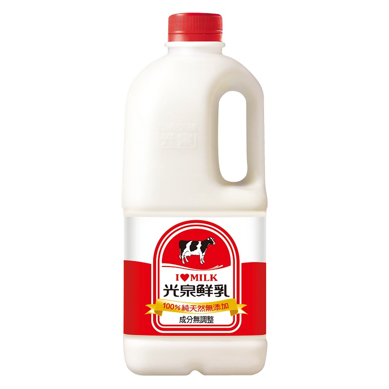
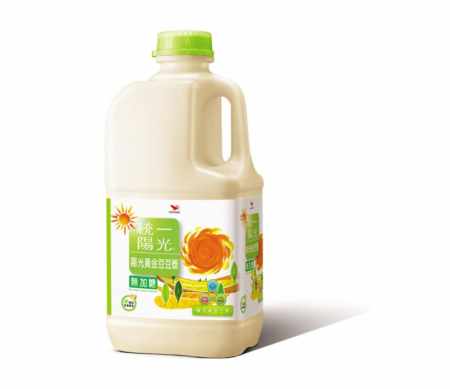
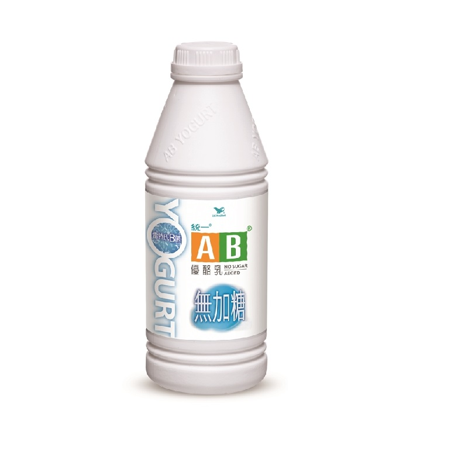
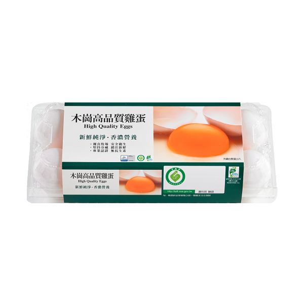

| 圖片 | 種類 | 營養價值 | 價格 | 數量 |
|---|---|---|---|---|
|  | 光泉100純鮮乳(無調整)1857ml | 牛奶中含有較豐富的礦物質，主要包括鈣、磷、鉀、鈉、鐵等。補鈣，可以選擇營養專家推薦的體恆健牌鈣之緣片，純天然碳酸鈣不含鉛等重金屬，鈣源好，含鈣量高，能被人體有效吸收利用.採用鈣加維生素D促進吸收的配方設計，增加骨密度、骨強度效果更明顯，是純凈、安全的鈣製劑,更適合孕婦和兒童。 | $161 | |
|  | 統一陽光豆漿(無糖)1858ml | 豆漿極富營養和保健價值，富含蛋白質和鈣、磷、鐵、鋅等幾十種礦物質以及維他命A、維他命B等多種維生素。不過因為大量植酸的存在，豆漿中的礦物質無法被吸收利用。另外豆奶中還含有大豆皂甙、異黃酮、卵磷脂等有防癌健腦意義的特殊保健因子。又因為豆漿不含乳糖，對於乳糖不耐症的人士不會產生副作用，也是價廉物美的蛋白質來源。但豆漿的鈣含量較低，一般只有同等劑量牛奶的三十分之一。 | $58 | |
|  | 統一AB無加糖優酪乳517ml | 優酪乳以牛乳為原料，因此仍保有優質奶蛋白質，且受到酵素作用後，在優酪乳中的乳蛋白質變得更為容易消化吸收；也含有豐富的鈣質、磷和鉀等礦物質，幾乎每100公克優酪乳就含有120-140毫克左右的鈣質；同時也有大量的維生素，包含維生素A及維生素B群。 | $45 | |
|  | 木崗高品質雞蛋 | 除了蛋白質之外，雞蛋的其他營養幾乎都存在蛋黃中。 蛋黃裡，有膽固醇，也含豐富的卵磷脂、維生素A、D、E，和維生素B 群（特別是B2 和B12）和鐵、鋅等多達10 種的礦物質。 其中，含量極大的卵磷脂則可以活化腦細胞，而有助於提高老年人的記憶力與小孩的學習力。 | $95 |
總計: